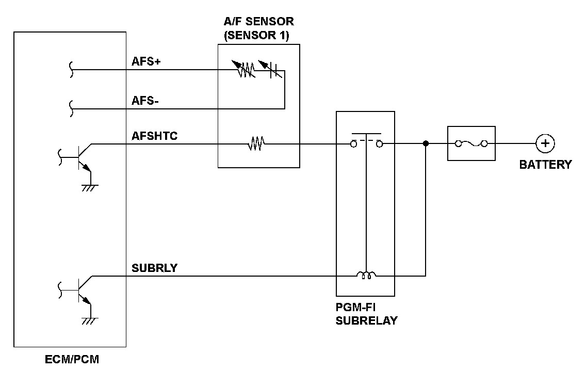
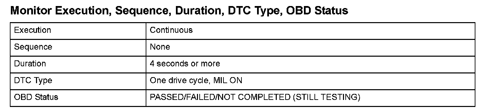
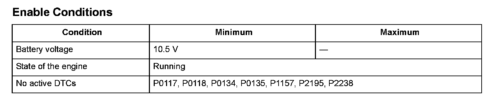

Advanced Diagnostics
DTC P2252: Air/Fuel Ratio (A/F) Sensor (Sensor 1) AFS Circuit Low Voltage
General Description
The air/fuel ratio (A/F) sensor (sensor 1) is installed in the exhaust system and detects oxygen content in the exhaust gas. The A/F sensor transmits a signal to the engine control module (ECM)/powertrain control module (PCM). A heater for the sensor element is embedded in the A/F sensor (sensor 1). It heats the sensor to stabilize and speed up the detection of oxygen content. The increase in current through the heater levels off as the voltage applied to the electrode reaches a certain range because the amount of oxygen that goes through the diffusion layer is limited. The current is proportional to oxygen content in the exhaust gas, so the air/fuel ratio is detected by the measurement of the current. The ECM/PCM compares a set target air/fuel ratio with the detected air/fuel ratio and controls the fuel injection duration.
If the A/F sensor (sensor 1) voltage is low, the air/fuel ratio is lean, and the ECM/PCM uses A/F feedback control to issue a Rich command.
If the A/F sensor (sensor 1) voltage is high, the air/fuel ratio is rich, and the ECM/PCM uses A/F feedback control to issue a Lean command. If the element is not activated or the ECM/PCM terminal voltage is a set value or less for a set time when power is applied to the A/F sensor (sensor 1) heater, a malfunction is detected and a DTC is stored.

Monitor Execution, Sequence, Duration, DTC Type, OBD Status

Enable Conditions
Malfunction Threshold
The AFS terminal voltage is 0.4 V or less for at least 4 seconds.
Driving Pattern
Start the engine. Hold the engine speed at 3,000 rpm without load (in Park or neutral) until the radiator fan comes on, then let it idle for 2 minutes.
Diagnosis Details
Conditions for illuminating the MIL
When a malfunction is detected, the MIL comes on and the DTC and the freeze frame data are stored in the ECM/PCM memory.
Conditions for clearing the MIL
The MIL will be cleared if the malfunction does not recur during three consecutive trips in which the diagnostic runs.
The MIL, the DTC, and the freeze frame data can be cleared by using the scan tool Clear command or by disconnecting the battery.